Boîte · S4·F1 · 102 parties
Bad Times at Buddyland56,9 % de victoires
🇪🇸 ES · 🇬🇧 EN · 🇫🇷 FR · 🇩🇪 DE · 🇮🇹 IT
📖 Guide de Billy (killer) · Guide de Buddyland (lieu)
Billy sur Buddyland. Sur 102 parties enregistrées, on gagne dans 56,9 % des cas, 8,4 points en dessous de la moyenne du jeu (65,3 %).
Ce qui la rend unique
Les Buddies sont des sbires avec leurs propres points de vie, initiative et attaque. On ne peut pas attaquer Billy tant qu'un Buddy est sur sa case. Il se soigne sur le symbole du cœur tant qu'1 des 4 sources d'énergie reste active, et tu peux les couper en dépensant du temps. Le Finale épique fait sortir un second tueur, Boris : il faut tuer les deux. Surnommée « le Camp Happy Trails de la Série 4 » : un bon terrain d'essai.
| Niveau | Intermédiaire |
| La carte | 4 espaces d'arcade comme point chaud |
Comment fonctionne Billy
- Déplacement de base : ne se déplace pas pendant sa Killer Action ; attaque qui se trouve sur sa case.
- A des Minions qui peuvent apparaître en cours de partie et agissent avant lui.
- Avant le Finale, après les Minions : +1 point de vie si une power source est active > Target Victim/Final Girl > Strike once.
Résumé de la page du Final Girl Wiki (CC BY-SA).
La carte : Buddyland
16 cases et 2 sorties (nord et sud). Cases de fouille : The Ball Pit, Dining Area et Prize Counter ; autres cases nommées : Bathroom, Janitor's Closet, Jungle Gym, Kitchen et Party Room. Les 4 cases centrales forment l'Arcade.
- Les cases de l'Arcade, au centre du plateau, interviennent dans divers effets de cartes.
- Les jetons Power Source sont placés sur le plateau avant de tirer la carte Setup et interviennent dans divers effets.
- Il faut éteindre les Power Source pour empêcher Billy de se soigner.
Résumé de la page du Final Girl Wiki (CC BY-SA).
Le killer
Billy affiche 58,8 % de victoires toutes cartes confondues, sur 194 parties. Ici, sur Buddyland, le chiffre est de 56,9 %.
Setups
Du plus dur au plus facile. Au moins 20 parties.
| Setup | Victoires | Parties |
|---|---|---|
| Playin' Hooky | 58,8 % | 51 |
| Pizza Party | 62,5 % | 48 |
| Hide and Seek | 67,3 % | 52 |
| Birthday Bash | 68,6 % | 51 |
| Buddy Day | 70,6 % | 51 |
Entre Playin' Hooky et Buddy Day, il y a 12 points d'écart. La mise en place compte plus qu'il n'y paraît.
Dark Powers
| Dark Power | Victoires | Parties |
|---|---|---|
| Merciless Minions | 46,2 % | 26 |
| Endless Power | 54,5 % | 44 |
| Deathlust | 58,3 % | 36 |
| Introducing... Billy Jr! | 60,3 % | 58 |
| Unrevealed | 77,3 % | 22 |
Cartes Finale
| Carte Finale | Victoires | Parties |
|---|---|---|
| Power Surge | 39,3 % | 28 |
| Encore | 41,0 % | 39 |
| Unrevealed | 57,6 % | 59 |
| It's Showtime! | 79,3 % | 29 |
| Sizzling Power | 80,0 % | 30 |
Où la trouver
Liens affiliés : si vous achetez, je touche une petite commission, sans surcoût pour vous. Cela ne change rien aux données ci-dessus.
Comment démarrer la partie
Les quatre ouvertures, avec laquelle choisir selon la mise en place, sont dans les stratégies d'ouverture.
📖 Guide de Billy (killer)
Se joue avec n'importe quel lieu. ↑ haut
⌛ = Temps · ✴ = dégâts · ❤️ = santé · 🩸 = Bloodlust · 🎭 = augmenter l'Horreur · ⊘🎭 = le masque barré de la carte
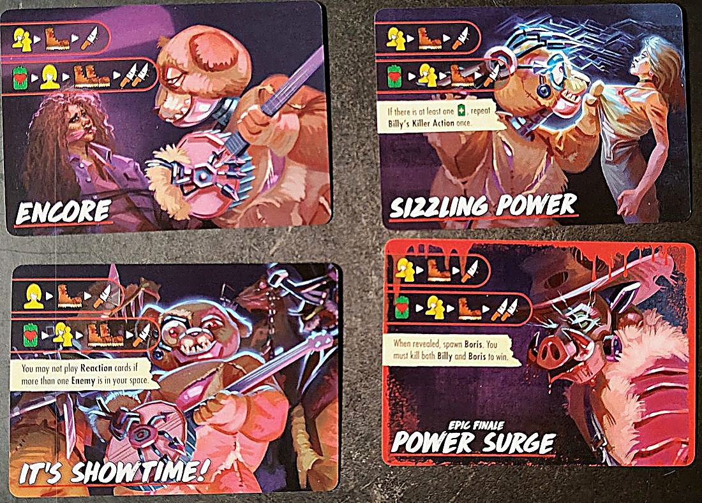
Attention
- Billy ne peut pas être attaqué tant qu'il y a un Buddy dans sa case. Les Buddies le protègent coûte que coûte.
- Tant qu'une Power Source est Active, l'icône batterie-cœur soigne Billy de 1 ❤️. Les éteindre est la clé.
- Un Buddy qui apparaît pendant la phase du Killer ne s'active pas avant la phase du Killer suivante.
Mise en place spéciale
- Avant de révéler la carte de mise en place, place 4 jetons Power Source face Active visible (batterie verte avec +) dans 4 cases différentes, aucune adjacente à une autre. Mets le 5e de côté : il peut entrer en jeu plus tard.
- Mélange face cachée les jetons de piste Bloodlust A et B, par type. Places-en 6 face cachée sur le plateau du Killer, chacun sur la case correspondante par couleur et icône. Les 2 restants (un de chaque) ne sont ni utilisés ni révélés.
- Mélange les 5 cartes Buddy face cachée : c'est la pioche Buddy. Mets de côté les 2 cartes Special Buddy : elles peuvent arriver plus tard et suivent les mêmes règles.
- Fais apparaître un Buddy (voir ci-dessous).
Piste Bloodlust
- Quand le Bloodlust atteint un niveau avec un jeton, révèle-le et applique son effet.
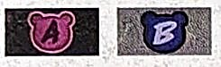
Power Sources
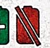
- Désactiver : retourne le jeton sur sa face Inactive (batterie rouge barrée). Tu peux le faire en dépensant ⌛ quand tu es dans sa case, même si tu ne fais qu'y passer.
- Si une Power Source Inactive est Activée, remets-la sur sa face verte.
- Avec l'icône batterie-cœur, Billy récupère 1 ❤️ si au moins une Power Source est Active. S'il n'y en a aucune, ignore-la.
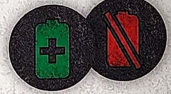
Les Buddies
- Ce sont des Sbires et ils suivent les règles normales des Sbires (p. 32 du livret de règles de base). Chaque carte est un animatronique avec sa propre santé, attaque et mouvement.
- Faire apparaître un Buddy : révèle la carte du dessus de la pioche, place ses marqueurs de santé dessus et place son jeton dans une case adjacente à Billy, sans Buddy si possible. Si Billy n'est plus en jeu, rien n'apparaît.
- Activation : chaque Buddy a un numéro d'Initiative (cercle, en haut à droite). Les Actions des Sbires et les cartes Terreur se résolvent de l'Initiative la plus basse à la plus haute.
- Tuer un Buddy : retire son jeton, prends la Kill Reward indiquée sur sa carte et retire la carte du jeu. S'il meurt en dehors de la phase d'Action, prends la récompense au début de la phase d'Action suivante.
- Exemple : Toby a 3 ❤️, Initiative 1, attaque 1, mouvement 1 et Kill Reward 2 ⌛.
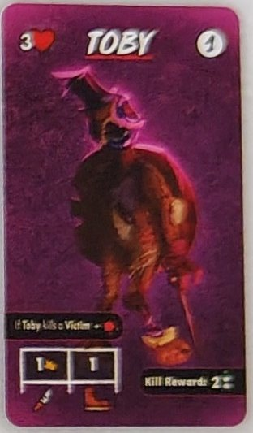
Les Buddies, un par un
- Toby · 3 ❤️ · initiative 1 · attaque 1 · mouvement 1. S'il tue une Victime, +🩸. Kill Reward : 2 ⌛.
- Ramey · 2 ❤️ · initiative 2 · attaque 1 · mouvement 2. Kill Reward : te déplacer d'1 case.
- Allie · 2 ❤️ · initiative 3 · attaque 2 · mouvement 1. Kill Reward : ⊘🎭.
- Cam · 2 ❤️ · initiative 4 · attaque 1 · mouvement 1. Les Victimes ne paniquent pas si Cam est le seul Ennemi de leur case. Kill Reward : prends une carte Guard.
- Roxy · 1 ❤️ · initiative 5 · attaque 1 · mouvement 3. Kill Reward : prends l'Objet du dessus de n'importe quelle pioche.
- Billy Jr. (Special Buddy) · 2 ❤️ · initiative 6 · attaque 1 · mouvement 0. Toujours sur la même case que Billy. Kill Reward : ✴ à Billy.
- Boris (Special Buddy) · 4 ❤️ · initiative 7 · attaque 3 · mouvement 2. Kill Reward : prends N'IMPORTE QUELLE carte Action.
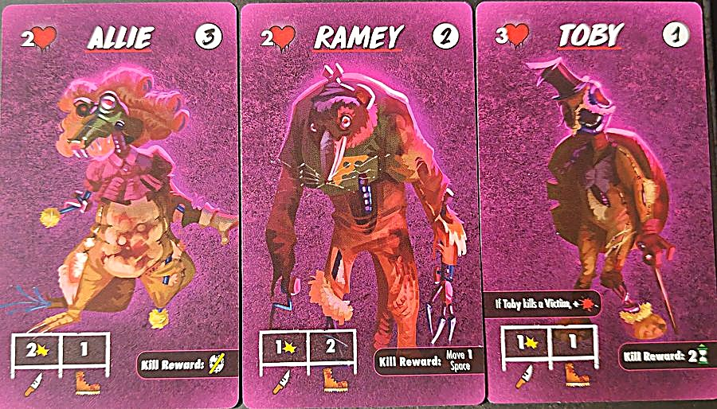
Finales
- Toutes ont deux lignes : en haut, Billy cible toi ou la Victime la plus proche, se déplace et attaque ; en bas, l'icône batterie-cœur puis il cible de nouveau.
- Finale de base (l'ours rose) : attaque sans se déplacer ; en bas, batterie-cœur, cible et attaque.
- Encore : en bas, se déplace deux fois et attaque deux fois.
- Sizzling Power : si au moins une Power Source est Active, répète son Action du Killer une fois.
- It's Showtime! : tu ne peux pas jouer de cartes Réaction s'il y a plus d'un Ennemi dans ta case.
- Power Surge (Finale Epic) : quand elle est révélée, fais apparaître Boris. Tu dois tuer Billy et Boris pour gagner.
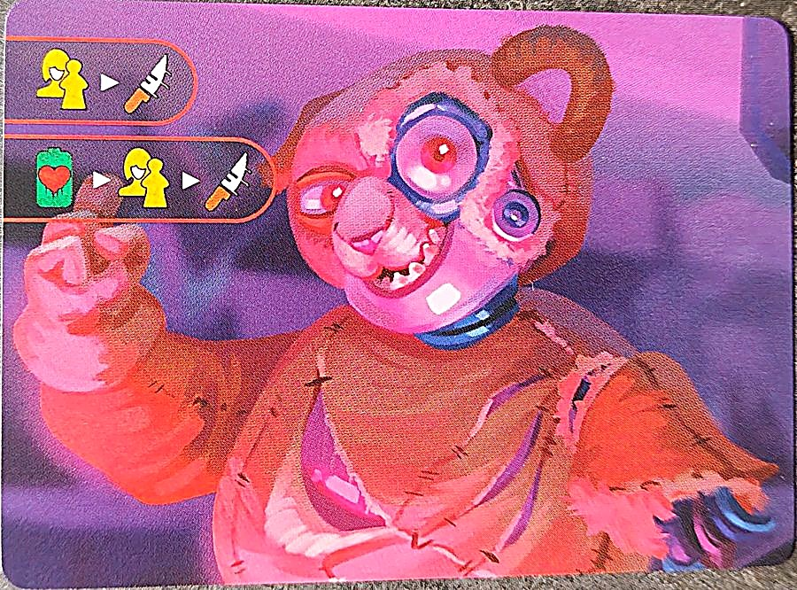
Dark Powers
- Introducing... Billy Jr.! : fais apparaître Billy Jr. dans la case de Billy.
- Deathlust : +1 au Mouvement et à l'Attaque de Billy.
- Endless Power : quand tu révèles le jeton Final Health de Billy, révèles-en un de plus par Power Source Active et applique celui qui soigne le plus.
- Merciless Minions (Dark Power Epic) : pour l'Action des Sbires de la Finale, ajoute un déplacement avant l'attaque.
- Backup Generator (Minor) : pendant l'Entretien, Active une Power Source Inactive de ton choix (si possible). Si une a été Activée, retire un ❤️ de cette carte.
- Renewable Energy (Minor) : tu ne peux Désactiver aucune Power Source.
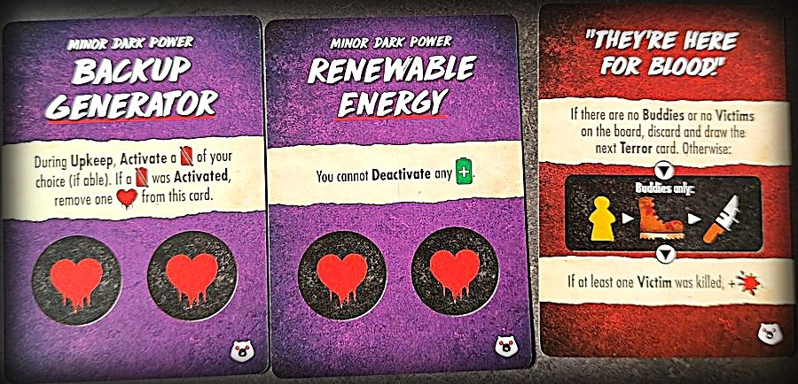
Cartes Terreur de Billy
- Animatronical : fais apparaître un Buddy et pioche la carte Terreur suivante.
- "He's Turning Them Back On!" : s'il n'y a aucune Power Source Inactive, défausse et pioches-en une autre. Sinon, place Billy dans la case la plus proche avec une Power Source Inactive, Active-la et 🎭.
- "Eyes in the Dark" : le Killer te cible (la Final Girl) et se déplace deux fois ; puis 🎭 une fois par Ennemi dans ta case et les cases adjacentes, jusqu'au nombre de Power Sources Actives.
- "It's a Short Circuit!" : si aucune case avec une Power Source Active n'a de Victimes, défausse et pioches-en une autre. Sinon, dans chacune de ces cases avec une Victime, une Victime est tuée, les autres paniquent et cette Power Source est Désactivée.
- "They're Here for Blood!" : s'il n'y a pas de Buddies ou pas de Victimes, défausse et pioches-en une autre. Sinon, Buddies uniquement : ciblent la Victime la plus proche, se déplacent et attaquent. Si au moins une Victime a été tuée, +🩸.
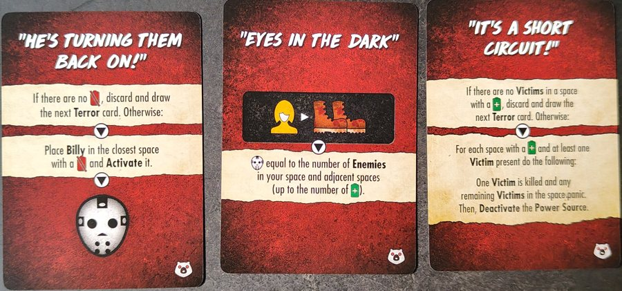
📖 Guide de Buddyland (lieu)
Se joue avec n'importe quel killer. ↑ haut
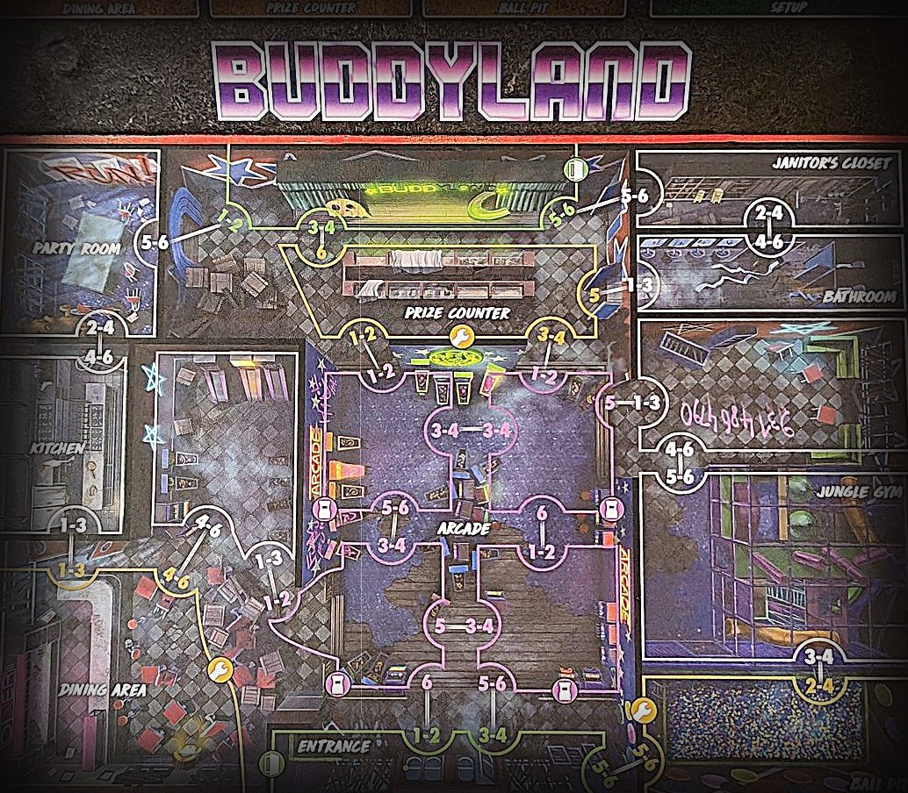
Attention
- Buddyland n'a pas de mise en place spéciale : les Power Sources appartiennent à Billy.
Le lieu
- Les 4 cases centrales avec l'icône de borne d'arcade sont des cases Arcade. Plusieurs cartes y font référence.
- Cases nommées : Party Room, Kitchen, Dining Area, Entrance, Prize Counter, Arcade, Janitor's Closet, Bathroom, Jungle Gym et Ball Pit. Dining Area, Prize Counter et Ball Pit ont des pioches d'Objets sur le côté.
Cartes Terreur de Buddyland
- Hungry for Blood : s'il n'y a pas de Victimes dans la Kitchen, la Party Room ou la Dining Area, défausse et pioches-en une autre. Sinon, place le Killer dans celle qui a le plus de Victimes ; il cible une Victime ou toi et attaque deux fois.
- Panic at the Disco : s'il n'y a pas de Victimes dans les cases Arcade, défausse et pioches-en une autre. Sinon, toutes les Victimes de chaque case Arcade paniquent ; celle qui panique vers une case avec un Ennemi est tuée. Si aucune Victime n'a été tuée, +🩸.
- "How'd They Sneak In?" : lance 3 dés et place une Victime par dé : 1-2 Jungle Gym, 3-4 Dining Area, 5-6 Party Room. Puis un Événement.
- "They Want Her!" : toutes les Victimes de ta case paniquent, tous les Ennemis avancent d'une case vers toi, 🎭 par Ennemi dans ta case, puis un Événement.
- "It's Play Time!" : lance un dé. 1-3 : place le Killer avec la cible la plus proche. 4-6 : il cible une Victime ou toi et attaque. Répète 5 fois de plus ; tu peux supprimer une répétition par carte Action défaussée de ta main, le tout décidé d'un coup à l'avance.
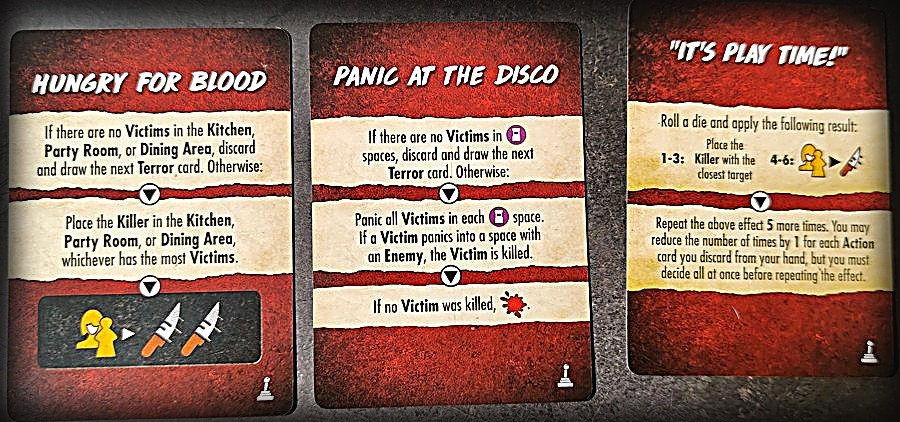
Mises en place
K = départ du Killer · figurine jaune = la Final Girl · chiffres = Victimes par case.


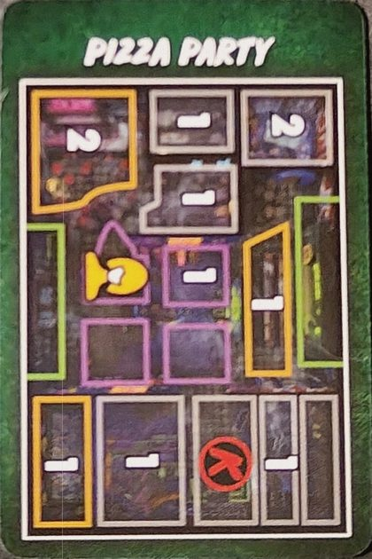
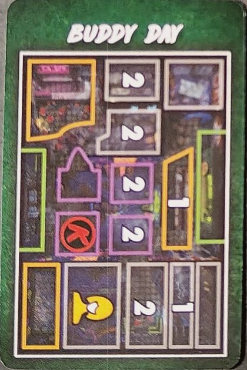
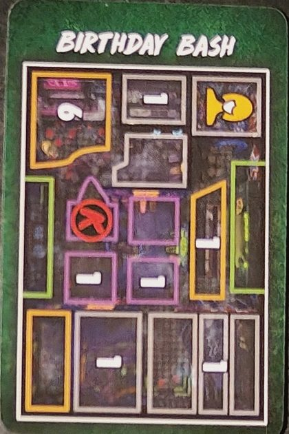
Objets

Arme · portée 0 · 1 ✴ · 2 mains. Une fois par phase d'Action, si tu es seule dans une case, tu peux dépenser 2 ⌛ pour ⊘🎭.

Place le jeton Bot dans ta case. Quand tu gagnes du mouvement, tu peux l'utiliser pour déplacer le Bot à la place. Jusqu'à 2 Victimes peuvent suivre le Bot, et les Victimes sur une sortie avec le Bot peuvent être sauvées.
Quand tu le prends, prends aussi la carte Action Planning. Les Victimes de ta case ne paniquent jamais.

Défausse-le dans une case Arcade pour dépenser 3 ⌛ pour 3 ⊘🎭.
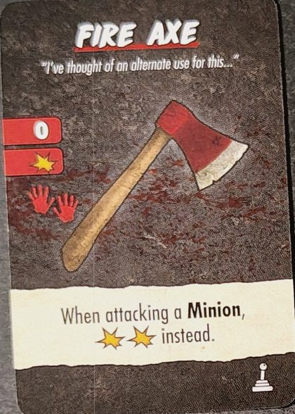
Arme · portée 0 · 1 ✴ · 2 mains. Contre un Sbire, inflige ✴✴ à la place.
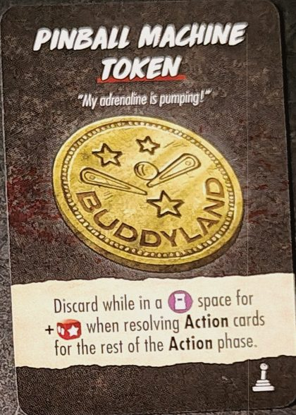
Défausse-la sur une case Arcade : +1 🎲 pour résoudre les cartes Action jusqu'à la fin de la phase d'Action.
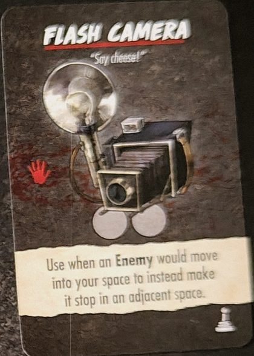
1 main · 2 utilisations. Quand un Ennemi devrait entrer dans ta case, fais-le s'arrêter sur une case adjacente.
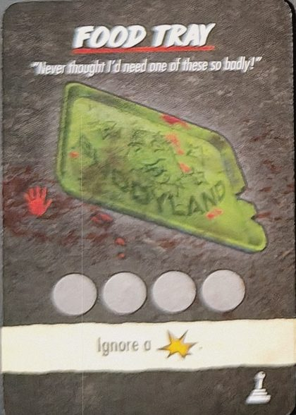
1 main · 4 utilisations. Ignore 1 ✴.
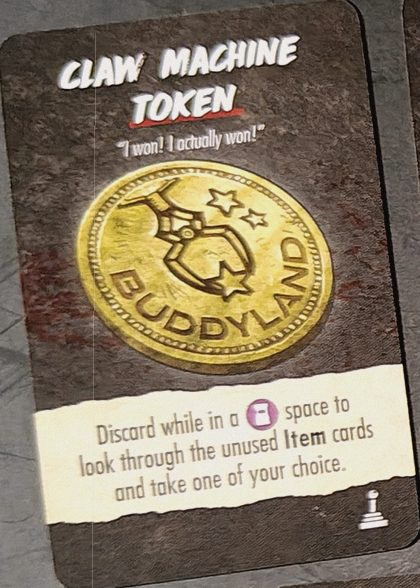
Défausse-la sur une case Arcade pour regarder les Objets inutilisés et en prendre un au choix.
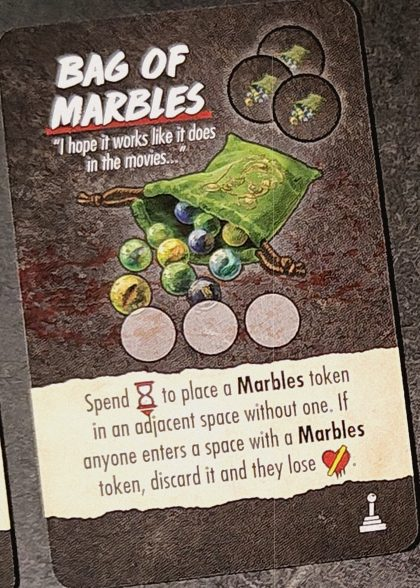
3 jetons Marbles. Dépense ⌛ pour en poser un sur une case adjacente qui n'en a pas. Qui entre sur une case avec Marbles le défausse et perd 💔.
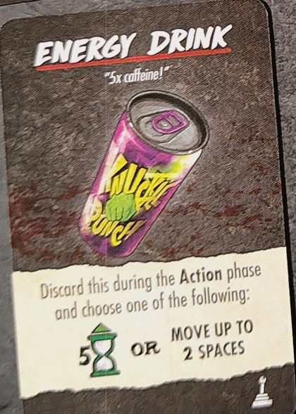
Défausse-la pendant la phase d'Action et choisis : 5 ⌛ ou te déplacer jusqu'à 2 cases.
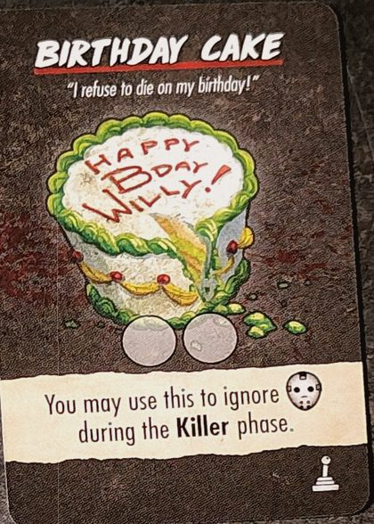
2 utilisations. Utilise-la pour ignorer un 🎭 pendant la phase du Killer.
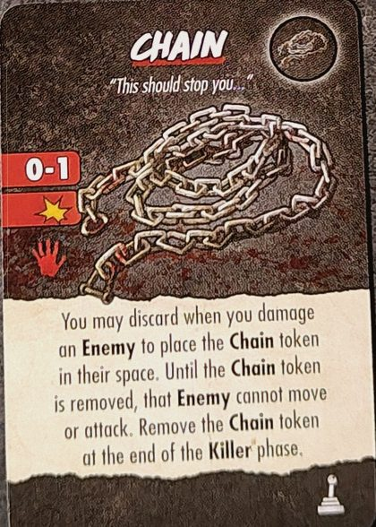
Arme · portée 0-1 · 1 ✴ · 1 main. Quand tu blesses un Ennemi, tu peux la défausser pour poser le jeton Chaîne sur sa case : tant qu'il y est, cet Ennemi ne peut ni bouger ni attaquer. Retire-le à la fin de la phase du Killer.
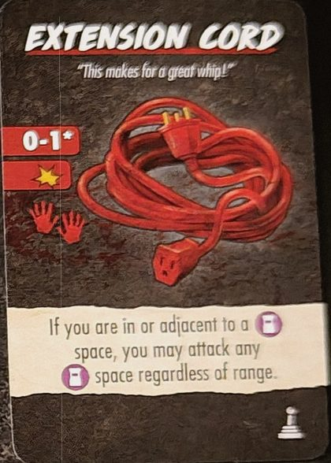
Arme · portée 0-1* · 1 ✴ · 2 mains. Si tu es sur une case Arcade ou à côté, tu peux attaquer n'importe quelle case Arcade, quelle que soit la portée.
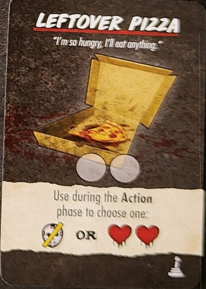
2 utilisations. Pendant la phase d'Action, choisis : ⊘🎭 ou ❤️❤️.
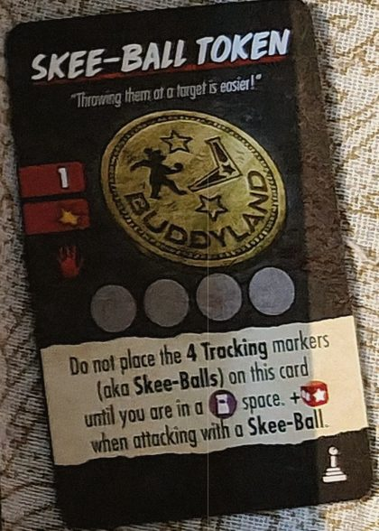
Arme · portée 1 · 1 ✴ · 1 main · 4 utilisations. Ne pose pas les 4 marqueurs (les Skee-Balls) sur la carte avant d'être sur une case Arcade. +1 🎲 quand tu attaques avec une Skee-Ball.
Événements de Buddyland
- Birthday Girl
- La Birthday Girl commence dans la Party Room. Si elle est seule pendant la phase de Panique, elle panique. Sauvée : 4 ⌛. Tuée : 🩸.
- Nick the Janitor
- Nick commence dans le Janitor's Closet et peut te suivre même dans la case du Killer. Quand il entre dans une case avec un Ennemi, il lui inflige 2 ✴ ; puis il quitte le plateau et revient dans le Closet au prochain Entretien. Tué : 2 🩸.
- Sing-A-Long
- À chaque Entretien : 🎭. Défausse quand le niveau d'Horreur atteint la zone rouge.
- Pizza Delivery
- La Victime la plus proche de l'Entrance est le Pizza Guy. Tant qu'il est dans ta case, tu peux lancer 2 dés supplémentaires quand tu résous une carte Action Search. S'il est tué, toutes les Victimes de sa case et des cases adjacentes paniquent.
- Tragic Collapse
- Lance un dé et pose le jeton Broken : 1-2 Jungle Gym, 3-4 Kitchen, 5-6 Bathroom. Tous ceux qui y sont ou y entrent ensuite subissent ✴.
- Playtime Shenanigans
- Place 2 nouvelles Victimes dans le Ball Pit et 2 dans le Jungle Gym. Défausse.
- Défausse tous les Objets face visible des pioches d'Objets. Défausse.
- Party Time
- Déplace toutes les Victimes d'une case vers la Party Room. Défausse.
- Buddy Up
- Pour sauver des Victimes, tu dois en sauver 2 ou plus à la fois. Tu peux l'ignorer pendant toute une phase d'Action en défaussant une carte Action Improvise ou Distraction.
- Broken Machine
- S'il y a des Victimes sur des cases Arcade, les Ennemis vont vers la Victime la plus proche sur une case Arcade quand ils visent une Victime ou la Final Girl. Défausse quand une Victime meurt sur une case Arcade.
Texte à nous, d'après le livret de règles, les cartes et le wiki. Noms des cartes en anglais. Une erreur ? Dites-le-nous.